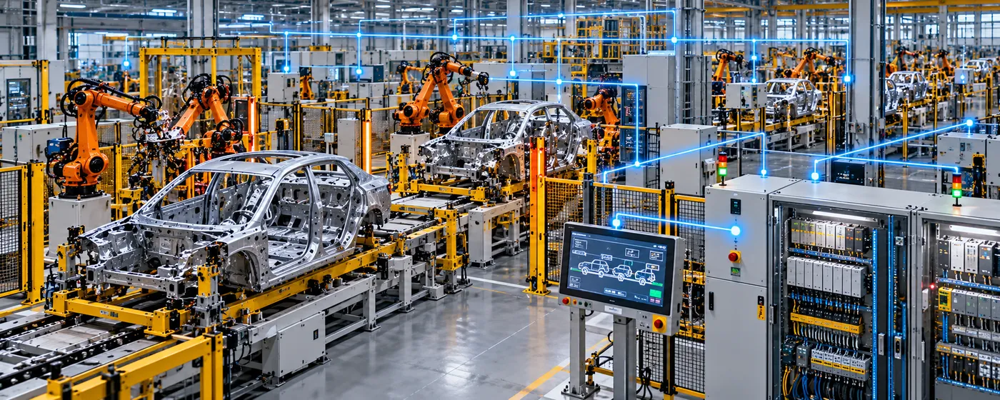

The Assignment
A major automotive manufacturing programme required controls and automation engineering for a complete Body-in-White (BIW) body shop.
The assignment involved developing and integrating the control systems required to coordinate automated production equipment across the body shop, including robotic cells, tooling, conveyors and associated manufacturing systems. The objective was to establish reliable communication and control across the production environment while supporting safe and efficient automated operations.
Our Approach
CS TECH Ai provided controls and automation engineering covering the development, integration and validation of the BIW body-shop control environment.
The engagement included:
- Controls engineering for complete BIW body-shop operations
- PLC programming and controls development
- HMI development for production monitoring and operator interaction
- Integration of robotic cells with production equipment
- Conveyor and material-handling controls
- Integration of tooling and automated manufacturing stations
- Development and validation of equipment sequences and interlocks
- Industrial communication and network integration
- Safety-system integration within the automated production environment
- Controls testing, debugging and validation
- Support for commissioning and production readiness
The engineering approach brought individual machines, robots, tooling and material-handling systems together within a coordinated controls architecture, enabling the complete body shop to operate as an integrated automated production environment.
Controls & Automation Scope
The programme covered multiple layers of the automated manufacturing environment, including:
- PLC-based machine and process control
- HMI and operator interfaces
- Robotic-cell integration
- Conveyor and material-flow control
- Equipment sequencing and interlocking
- Industrial communication networks
- Safety controls
- Testing and commissioning support